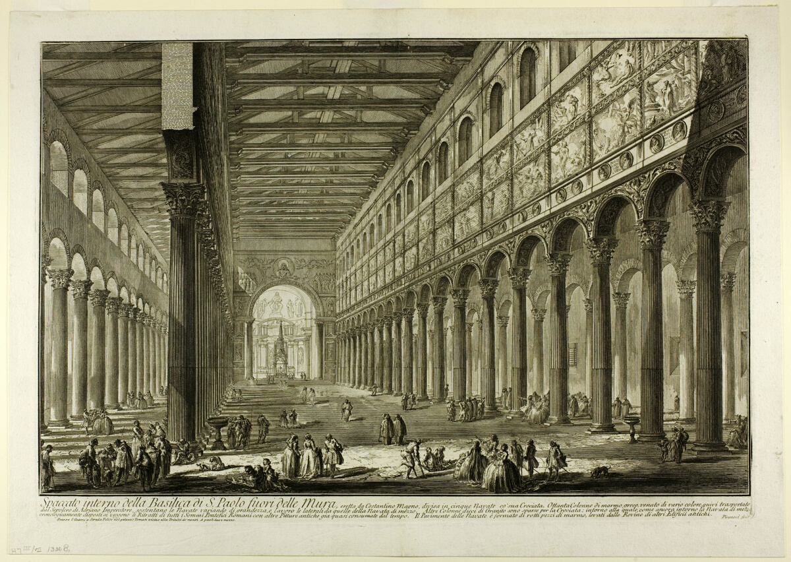

About
I am an analyst at SESCO, where I work on problems in grid modeling and electricity markets.
Previously, I worked on distributed energy resources at NREL (now NLR) and on optimal transport for dynamical systems. I graduated from the University of Pennsylvania with a BA in Physics and a BSE in Systems Engineering, through VIPER.
